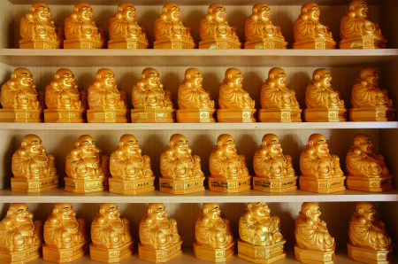

玉皇山弥勒寺その2/兵庫県
山中に点在する大仏さん目当てに訪れた玉皇山弥勒寺。
しかし広大な境内を進むに従って、謎の呪文のようなモノに取り付かれてしまい、最早大仏さんよりもそっちに夢中になってしまった。
山頂付近のラウムの碑から後半戦はスタートする。

この寺の最高峰、ラウムの碑を過ぎると緩やかに標高は下がり、作りかけ感満点なエリアにでる。
作りかけなのか放置されているのか微妙な感じ。
その先にやっと現れました。３番目の大仏。
清涼宮という建物の上に座ってました。建物の前の角柱に書かれていた天通収圓弥勒大仏というのがこの大仏さんの名前なのだろうか。

先ほどの３番目の大仏さんがいた清涼宮から道は二手に分かれる。
一本は尾根伝いに下に降りていくメインのルート、そしてもう一つは山の裏側に下りていく裏道。
その裏道沿いに角柱が隙間なくびっしり並んでいる。
正面は霊障解消供養塔とある。
解消を供養するのかな？チョットこの時点で意味不明な部分もあるがそこで立ち止まっていると日が暮れちゃうので細かいところは気にせずに先に進むぞ。
最初は何となく普通っぽい願い事もあったので、スルーしていたのだが…
霊団の壁解消、とか悪念浄化認知症云々…などと何だか段々不穏な雰囲気になってきたような…
霊団壁解消 次大元中土入植とか汚血浄化、土地図録解消などというコトバに関してはどう解釈したらいのか考え込んでしまう。
例えば「土地図録解消」って何か土地にまつわる具体的な願い事なのか、それとも教団オリジナルの教義に基づく抽象的な祈願なのか、サッパリ判らない。
小屋の中を覗くと次の出番を待つ角柱が待機している。
さらに眼下には大量の角柱が並んでいる。ひえ〜。
てなわけでさらに先に進もう。
神社の祠のようなモノが並ぶエリアを抜け、さらに道を下っていくと…
４番目の大仏が現れる。
このエリアは裏山と呼ばれていて、ただでさえ人の多くないこの寺の中でも一段と輪をかけて最果て感漂うエリアだ。
そんな場所でも屈託のない笑顔炸裂であります。
大仏にいたる道中はもちろんモジだらけ。
日本独立即図南…何だ？
各国の枉死者（横死者）の供養のための角柱が横積みされていた。
戦没者、戦争犠牲者を枉死者として表現しているようだ。
大仏さんの下は清涼殿となっている。さっきの大仏さんの下は清涼宮ね。
ここにも大量の角柱が林立している。
ラバウル、タイ、ボルネオ、ラオス、パプアニューギニア…と戦時中の日本に関係ある土地の戦没犠牲者の供養塔が並んでいる。
かと思えばフランスやイタリアの戦没者供養という角柱もあるので、全世界の戦争犠牲者の供養を行っている、という事なのかな？
その隣にあるのは萬世一系之塚。
様々な文字が書き込まれた小石が貼り付けられた塚、のようなものには布袋サマの陶器が並んでいる。
説明書きによれば天皇家霊団が天命の許に復権し、宇宙祭祀王としての霊威を永代に継承する誓いの碑です、とある。うむむ、よく判らん…。
その先にはまたしても祠が並ぶ霊場があるが、かなり番外地感出してます。
ご自慢の角柱もご覧の通り。
さらに先は完全に終わっちゃってる。
てな訳で来た道を引き返す。
先ほどの３番目の大仏のあった清涼宮に戻り、尾根伝いに下るメインのルートを行く。
しばらくすると観音堂と大量の観音像が見えてくる。
中には甘えん坊の観音サマも。
さらに進むと５番目の大仏さんが見えてくる。
泉珠靖國神社とある。
建物の様子からして一番新しい弥勒大仏だと思う。
中央に大きな鎮魂之碑、壁には神武天皇、明治、大正、昭和天皇などの肖像が掲げられていた。
さらに先に進むとダブルで大仏さんが登場！
おお、芋蔓式に第六第七の大仏さんがおわすではないか！
五芒星型に組まれた角柱（ここでは護摩木と言うべきか)の中に小さな護摩木が詰まっている。
このエリアの呪文が一番ぶっ飛んでた
ブラックホールって解放しちゃって物理学的には大丈夫なのだろうか？良くわかんないけど。
144大元地球延命145大元創造…
丹田チャクラ物質精神充実…
宇宙から身体、戦没者慰霊から健康祈願とあまりにも広い範囲の題材が凄い深度で急に語られ始める驚き。
馬券売り場の近くでいい感じに酔っ払ってるおっさんとかに近い。肉じゃがの味の浸み具合の話をしていたと思ったら急にハードな人生論が語ってる感じ。
精神的にジェットコースターに乗ってるみたいで面白いすけどねー。
褒忠義民廟という建物の上におわす弥勒さん。隣には泉珠大雁塔という焼却炉のような塔が。
義民廟の中にはこれまた中華スタイルの神像が並んでいる。
そしてミニ弥勒さん。

天照大神、月読尊、ポセイドン、ゼウスなどが祀られているといわれても、もはや「はぁ、そうですかぁ…」という感じ。
ラスボスの弥勒サマ。
さすがに同じサイズの大仏をこれだけ続けて見ると、「でかいなー」とか「綺麗だなー」とか「笑ってるねー」といった初期の感想も消えうせて単に「あ、７個目だね」といった感想になってしまう。
ただし弥勒さんの足元に林立する角柱のメッセージは依然ぶっ飛び続けている。
次元と宇宙と公営企業が同じフォーマットに並列するシュールさったら…。
何故か世界各国の国名を記した角柱が並んでいた。
これにて大仏巡りは完了。
懸念だった２リットルのペットボトルに入った御神水も気がつけば半分以上飲んでしまったぞ。
不動明王の並ぶコーナー。
祠の並ぶコーナー。
銅葺きの屋根が眩しい。
鳥居の先には稲荷社があった。
で、ラストはお地蔵さんのお見送り。
微妙な感じのお地蔵さんが混ざってますが、ま、良いでしょう。
そんなこんなで最初の弥勒さんのところに戻ってきた。長かったー。足がぶっ壊れそう。
一巡りしてみて印象深かったのは、やはり角柱に書かれていた文言の不思議さだ。
一体何を意味し、何を願っていたのだろう。凄く気になる。
でもね。
私はその文言の意味を知ろうとは思わない。いや、逆に知りたくないの。
だってせっかくこんな強烈な呪文のような文字が迷宮のように林立しているのに、意味なんて判っちゃったら面白くないでしょ。
コトバなんて何千年もの間、人間がこねくり回しちゃったせいで直感的なサインとしての意味が低下してしまったように思える。
そんな中身が上滑りしていく記号よりも字面のインパクト自体で語る象徴としての文字の方が絶対見る者のハートをキャッチする、と私は思うのだ。
例えば巷に時たま出現する意味不明の電波系貼り紙や怪文書、街中の壁に書かれた謎のメッセージ…
意味すら必要としない根源的なモジの存在に出会ったときむしろ勝手な妄想を面白い方面にパンパンに膨らませた方が夢が広がるでしょ。
世の中、曖昧模糊な方が楽しい事もある、ということで。
昔、萩原朔美さんが山の中に捨てられたユンボを見て散々妄想を膨らませた挙句、「真実なんて知らない方が絶対面白いよねー」と言っていたのを思い出す。
知らない事は不幸なこともあるが、時として幸福な場合もある。
なぜなら一度「本当のこと」を知ってしまったら、もう二度と妄想を膨らませることが出来なくなるから。
妄想は人に与えられた最高の娯楽であり快楽なのだよ。
帰りは驚くほどの下り坂。途中の峠から駅まで一回もペダルを漕がずに帰れました。
苦あれば楽あり、楽あれば苦あり。
情報提供はへりおすさんです。
2012.05.
珍寺大道場 HOME